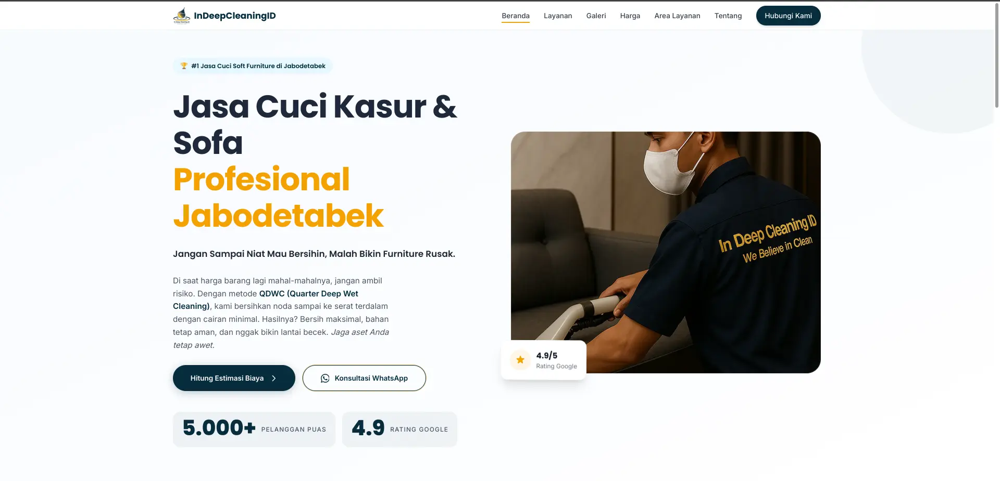
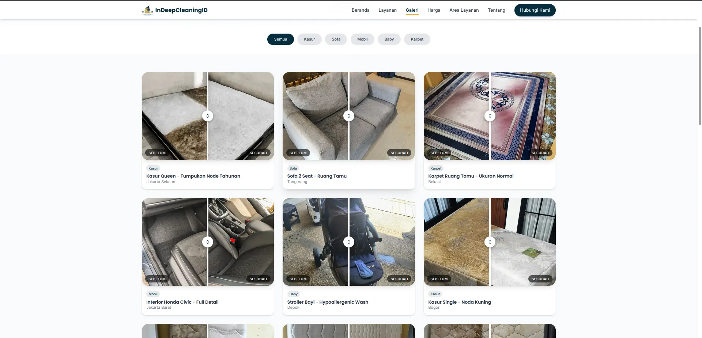
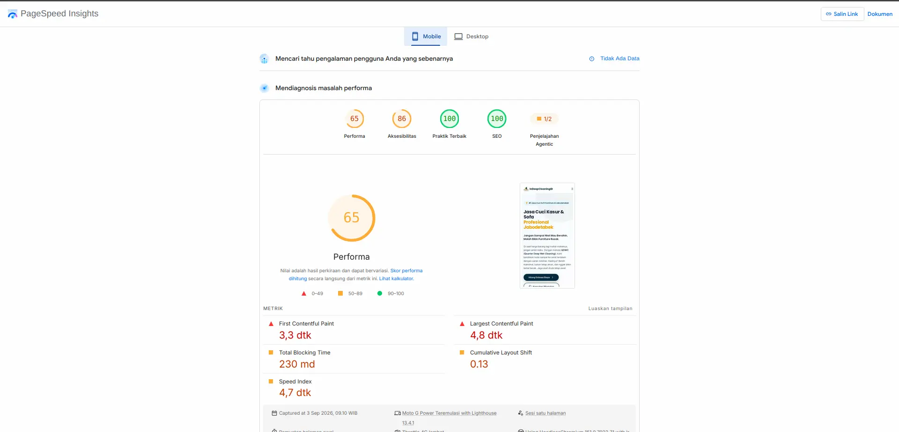
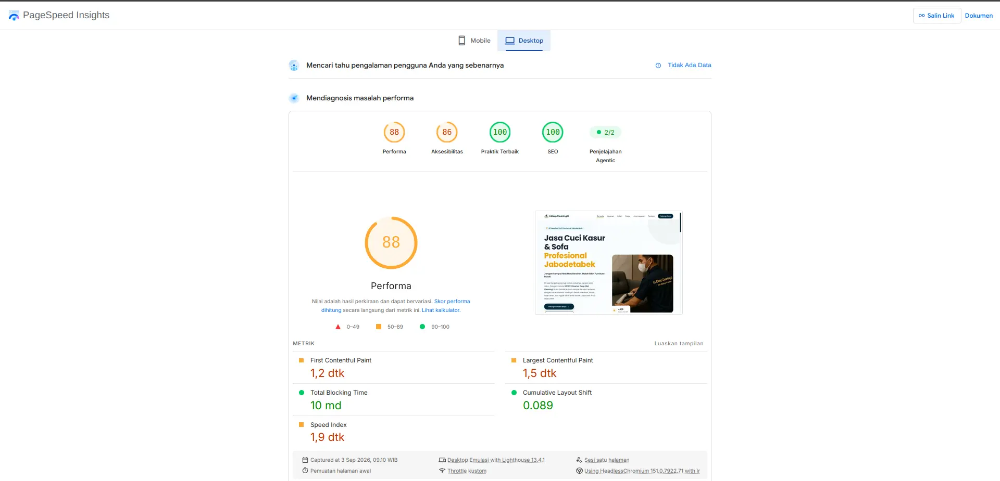

Experiment 005
StableBuilding a Full Feature Services Business Website Using Only Local AI.
Can a full-feature business website with before-after slider, page animations, 44-item cost calculator, and full SEO be built end-to-end using only local open-source LLMs without cloud AI?
System Requirements
CPU
Intel Core I5 11400F
RAM
16GB DDR4 3200 MT/s
GPU
RX 6700 XT
OS
Ubuntu 26.04 LTS
Inference Engine
Llama.cpp
Coding Tools
OpenCode + Cline (VS Code)
The Model That Helped Me
ORNITH-1.0-35B-A3B-IQ4_NL-GGUF
Frontend Stack
Tailwind CDN + Vanilla JS
Status
STABLE
Screenshots




Visualization
Lighthouse Pagespeed Scores — Mobile vs Desktop
Real scores from pagespeed.web.dev on the live 14-page site (https://indeepcleaningid.site). Performance is the only metric with clear headroom — SEO is already 100.
Mobile Version
Perf 65 — Needs ImprovementDesktop Version
Perf 88 — GoodAgentic Explorer is an experimental diagnostic in Pagespeed, not a Lighthouse core metric. The gap between Mobile (65) and Desktop (88) reflects image weight from 28 before-after .webp files — a known optimization headroom.
Experiment Details
I needed a home-service business website that could explain services clearly, prove results with before-after evidence, give transparent pricing through a cost calculator, and rank for search — without relying on cloud AI or an expensive agency. The question was whether a small local model could handle the full frontend complexity deterministically.
-
1.
Multi-page architecture: 14 pages — 7 main (index, pricing-estimator, gallery, coverage, about, contact, services/index), 5 detail (cuci-kasur, cuci-sofa, cuci-karpet-gordyn, interior-mobil, baby-stuff), 1 landingpage/v2 for Meta/Google Ads conversion, and 1 invoice/admin for data control.
-
2.
Before-after slider: 14 pairs (28 .webp), draggable
clip-path: inset(), divider + handle,data-slider, filterdata-filterfor all/kasur/sofa/mobil/baby/karpet. -
3.
Scroll animations on every page:
reveal,reveal-left/right/scaleviaIntersectionObserver,stagger-1..8, counterdata-counter="5000",magnetic-btn,tilt-card3D,navbar-glasshide-on-scroll,float-organic,pulse-ring. -
4.
Cost estimation calculator: 22 service categories mapped to 44 price items (
indeepPricelist), dependent dropdowns (service-type → item-size), dynamic extras (Kasur Latex +40k, Sofa Lepas Pasang +20k/seat, Lebar >75cm +20k/seat), live result + WhatsApp deep-link viaencodeURIComponent. -
5.
Separate data source:
assets/data/pricelist.js+assets/pricelist.jsonas single source of truth, so prices can be updated without touching UI logic. -
6.
Full SEO: canonical, OG
1200x630, Twitter, hreflang,preload Hero.webp, JSON-LDLocalBusiness + BreadcrumbList + Service + OfferCatalog + GeoCircle 50km,sitemap.xml,robots.txt,optimize-meta.sh/add-schema.sh. -
7.
Responsive & performant:
assets/css/style.css1306 lines, 15 animation types, 3 vanilla JS files (main 487, estimator 214, slider 76) — no heavy framework, Tailwind CDN only. -
8.
Consistent brand:
primary #062C3D / accent #F4A100+Poppins (heading) + Inter (body)for the business site (portfolio page itself stays inink/paper/accent + Manrope/Interfor coherence).
A local open-source LLM (ORNITH 35B IQ4_NL via Llama.cpp) is sufficient to generate production-ready vanilla JS + Tailwind syntax — if prompts are fully deterministic and the builder has enough HTML, Tailwind, JS, SEO, and chart/styling knowledge to judge whether the syntax is actually correct. AI can write the syntax; it cannot decide if the syntax is correct.
I built the 14-page site by prompting the local model per component — slider, estimator, navbar, reveal animations — and per batch, using OpenCode + Cline in VS Code. Each component was generated, manually validated, and iterated in small context windows to preserve output quality, instead of asking the model to generate the whole site in one shot.
-
1.
Too many revisions — 33 revisions with ~4M total context split across sessions. Single-shot full-site generation collapsed after the first few pages; context bloat degraded coherence immediately.
-
2.
slider.jsbefore-after logic was surprisingly complex for a local LLM. It required zero-ambiguity deterministic instructions: exactclip-path: inset(0 0 0 50%)direction, divider/handle sync at the same percentage, and separate mouse vs touch handlers (mousedown/mousemove vs touchstart/touchmove). Any vague phrasing broke dragging on mobile. -
3.
The initial cost calculator did not match the real
pricelist.js(44 items). The model hallucinated prices and sizes for Kasur 200/180/160 etc., until I isolatedpricelist.jsas the single source and forced dependent dropdowns to read from it verbatim. -
4.
First-pass designs for all pages were too templated and “safe” — generic Tailwind cards that did not match the brand preference (
#062C3D / #F4A100, Poppins/Inter, premium minimalism). Required manual design direction per page. -
5.
Internal linking needed a separate optimization pass. The model generated basic
<a href>but missed contextual anchor distribution between services/index and detail pages — manual pass fixed crawl depth. -
6.
Initial SEO was too basic — just title/description. Achieving OG/Twitter consistency, three JSON-LD schemas,
preload, and correctGeoCircleradius required my own deeper SEO understanding; AI alone stayed at template level. -
7.
Initial
sitemap.xmlwas not readable in Google Search Console (wrong loc / missing image:image namespaces). Required manual schema fix viaadd-schema.shand re-submission. -
8.
Animations had to be revised piece-by-piece, per batch. Attempting to generate all 15 animation types at once (reveal, magnetic, tilt, counter, float, pulse) overflowed the context window and degraded output quality — batching restored determinism.
The pivot was to stop relying 100% on AI. I kept a deterministic-first workflow: understand HTML, Tailwind CSS, Vanilla JS, SEO, chart types, and styling at a human level, then let AI help write the syntax — not decide it. By generating one component per session, validating against the real pricelist and real Lighthouse, and batching animations, the quality jumped from templated to production. AI is the assistant that types; the builder remains the reviewer who judges.
Figures from the live site at `indeepcleaningid.site` (Hostinger). You can verify via the screenshots above and `pagespeed.web.dev`.
Total Pages
14
7 main + 5 detail + 1 landing + 1 admin
Before-After Pairs
14 (28 images .webp)
Calculator Items
44 / 22 categories
Custom JS Files
3
main / estimator / slider
Custom CSS
1306 lines
Animation Types
15
Pagespeed Mobile
65 perf / 100 SEO
Pagespeed Desktop
88 perf / 100 SEO
The site is stable and live on Hostinger with 14 pages, 14 sliders with filter, a 44-item calculator with WA deep-link, 3 JSON-LD schemas, and honest Lighthouse scores (SEO 100 on both, performance 65 mobile / 88 desktop, accessibility 86, best practices 100). It is not pixel-perfect on performance yet, but it is sufficient and production-ready for the Jabodetabek service business it was built for.
Capability does not come from prompting harder — it comes from knowing the domain well enough to make prompts deterministic. Local AI (ORNITH 35B) is strong at syntax generation when instructions leave zero ambiguity (clip-path direction, pricelist binding, JSON-LD structure). The builder’s understanding of HTML/Tailwind/JS/SEO is the bottleneck, not the model size. Batch per component; keep context small.
If you want to replicate this, do not ask local AI to “build a whole website.” Start with one component — the slider or the calculator — isolate your data (`pricelist.js`), master deterministic prompting for that slice, ship it, then batch the next. Learn Tailwind and vanilla JS first; AI will then accelerate you instead of replacing you. This pattern scales to the invoice (EXP006) and n8n (EXP007) you’ll see next.
Configuration Template
assets/js/estimator.js — dependent dropdown (deterministic pattern)
function updateSizeDropdown(service) {
sizeSelect.innerHTML = '<option>-- Pilih Ukuran / Tipe --</option>';
if (!service || !priceData[service]) {
sizeSelect.disabled = true; return;
}
priceData[service].forEach(function (item) {
var opt = document.createElement('option');
opt.value = item.id;
opt.textContent = item.nama_barang + ' (' + item.ukuran + ') — Rp ' + item.harga.toLocaleString('id-ID');
opt.dataset.price = item.harga;
sizeSelect.appendChild(opt);
});
sizeSelect.disabled = false;
}
// Keep data separate — single source of truth
// assets/data/pricelist.js → const indeepPricelist = { kasur: [{id:1, ukuran:"200", harga:300000}, ...], sofa: [...] };
Do not copy this snippet blindly; adapt it to your pricelist structure. The key lesson is to keep data (`pricelist.js`) separate from UI — AI can generate the loop, but you must ensure the 44 items are exactly correct.
-
1.
I chose to keep
indeepPricelistin a dedicatedassets/data/pricelist.jsfile (22 keys, 44 items) so the estimator never hardcodes prices — any hallucination is caught by diffing against this file. -
2.
I chose dependent dropdowns (
service-type → item-size) withdisabledhandling because the model initially generated two independent selects — which allowed invalid combinations (e.g., “Sofa — 200” size). -
3.
For
slider.js, I required the exactclip-path: inset(0 0 0 50%)pattern with synceddivider.style.leftandhandle.style.left— vague “slide” prompts produced inverted masks on mobile. -
4.
I batched animations (reveal, then magnetic, then tilt, then counter) because generating all 15 types at once overflowed the 35B context window — output quality dropped from 99% to ~60% coherence.
FAQ
Frequently Asked Questions
Can local AI really generate a production estimator with 44 price rules? ▼
Yes, but only with deterministic prompts and manual validation. Initial calc hallucinated prices for Kasur 200/180 etc. Splitting pricelist.js as single source of truth (22 categories, 44 items) and forcing dependent dropdowns to read from it verbatim fixed it. AI drafted the loops and WA deep-link — human ensured every item matched.
What broke when you let AI build the slider fully? ▼
Clip-path direction, divider sync, and touch vs mouse handlers. The local LLM needed zero-ambiguity instructions for inset() percentages and event handling (mousedown vs touchstart). One-shot full-page generation failed — batched per-component with explicit slider.js pattern succeeded.
How did you get SEO 100 without cloud tools? ▼
Manual SEO layer: canonical, OG 1200x630, three JSON-LD schemas (LocalBusiness, Service, BreadcrumbList), preload Hero.webp, sitemap fix for Search Console, internal linking pass. AI gave baseline meta; human optimized beyond template. Performance still has headroom (65 mobile / 88 desktop) — SEO is 100, perf is not, and that honesty is intentional.
For those of you unable to read this data from technical standpoint, here is the conclusion
This was not a demo or a template bought online. It is a live business website with 14 pages that serves real customers in the Jabodetabek area.
Local AI helped write the code — the before-after sliders, the scroll animations on every page, and the price calculator — but it took 33 revisions and about 4 million tokens of context to get it right. The first versions were generic and broken.
The site now shows real proof of work (14 before-after pairs, 28 images), gives instant price estimates for 44 service variants, and is fully structured for search engines with sitemaps and business schemas.
It runs stably on consumer hardware with a 35-billion-parameter local model. You do not need a cloud subscription to build something this complete — but you do need to know what you are building and how to check the AI’s work.
It is not flawless. Performance can still be improved — especially on mobile. But it is sufficient, it is live, it is maintainable, and it proves that local AI is practical when you use it deterministically: one component at a time, with the builder as the reviewer.
Disclaimer
A Note on Results
From a purely objective standpoint, I wouldn’t claim this is the optimal outcome. Given the local model (ORNITH 35B IQ4_NL via Llama.cpp) and consumer-grade hardware used, I personally consider the result to be sufficient and practical for real business use. That said, there is clear room for further optimization — particularly in overall website performance (65 on mobile / 88 on desktop) and image weight from the 28 before-after files.